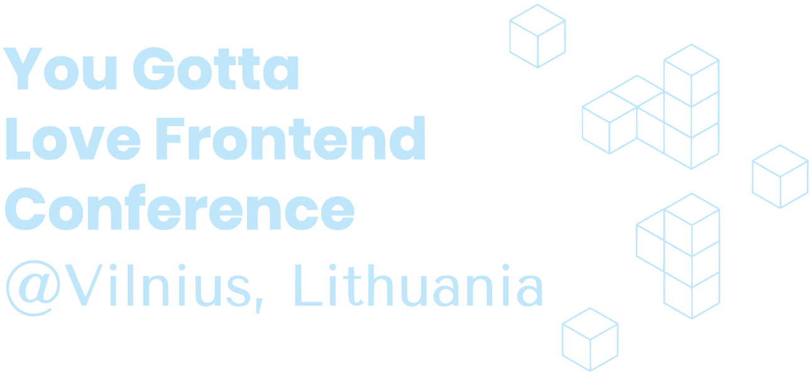
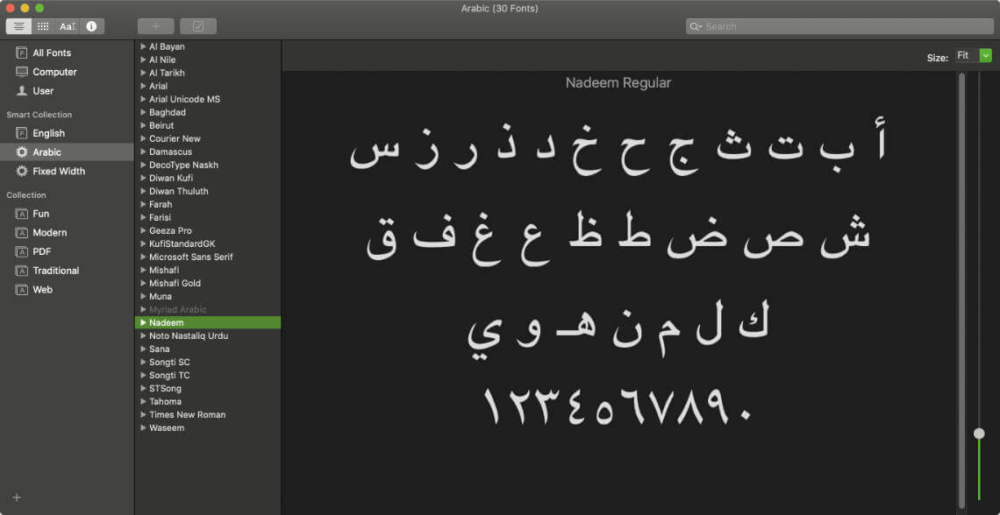
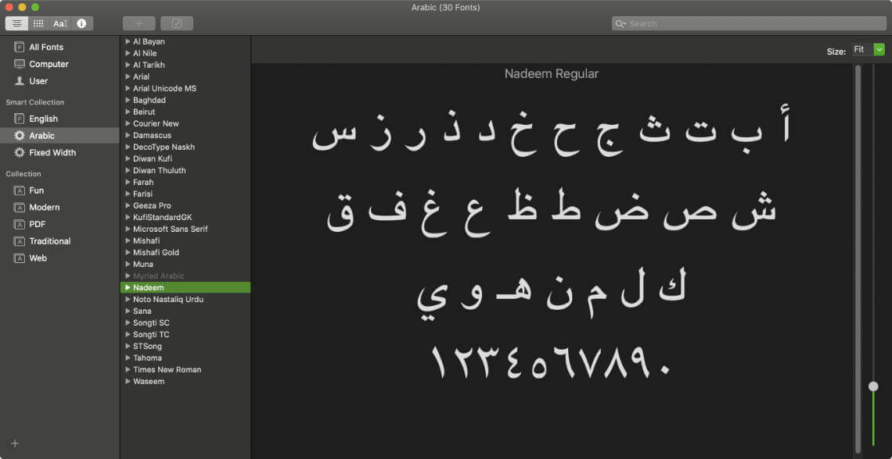
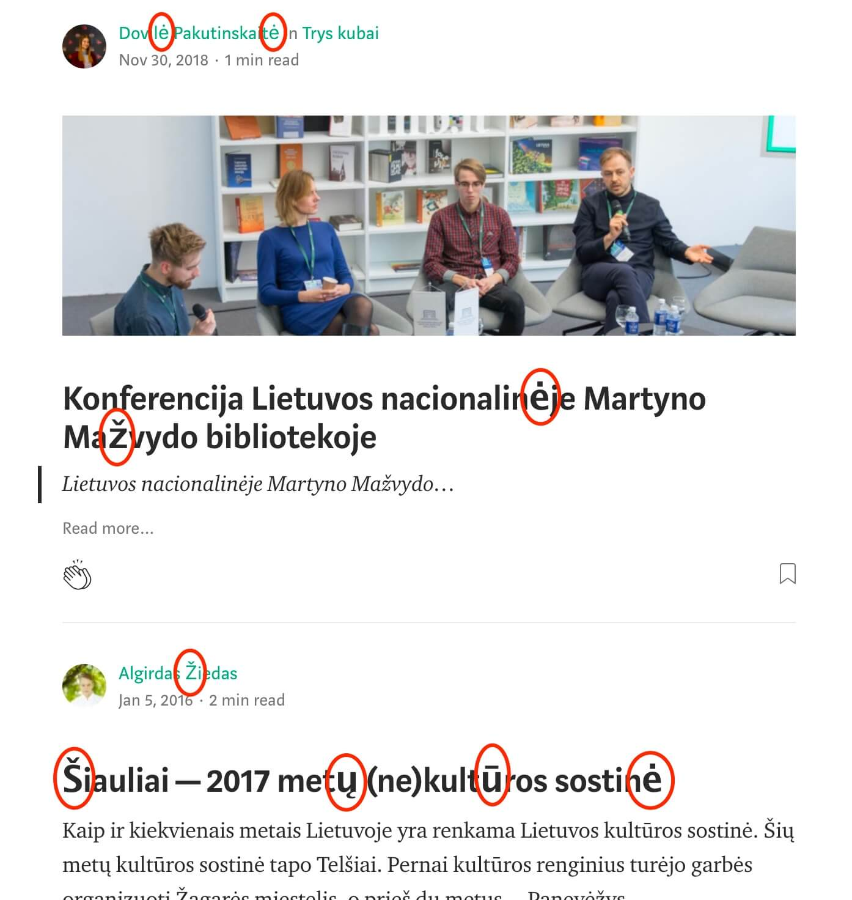
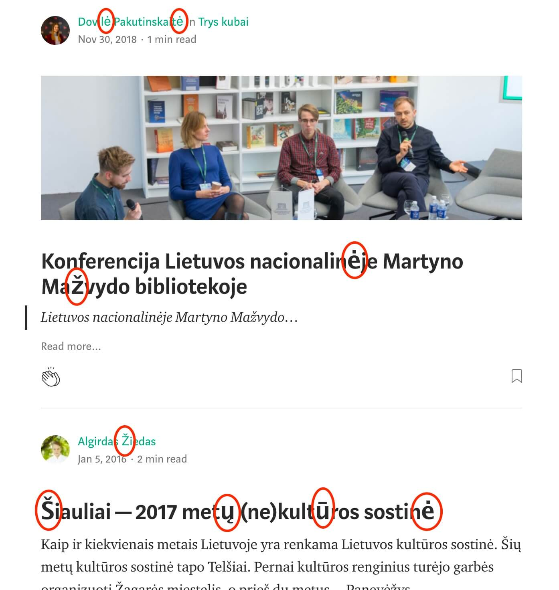
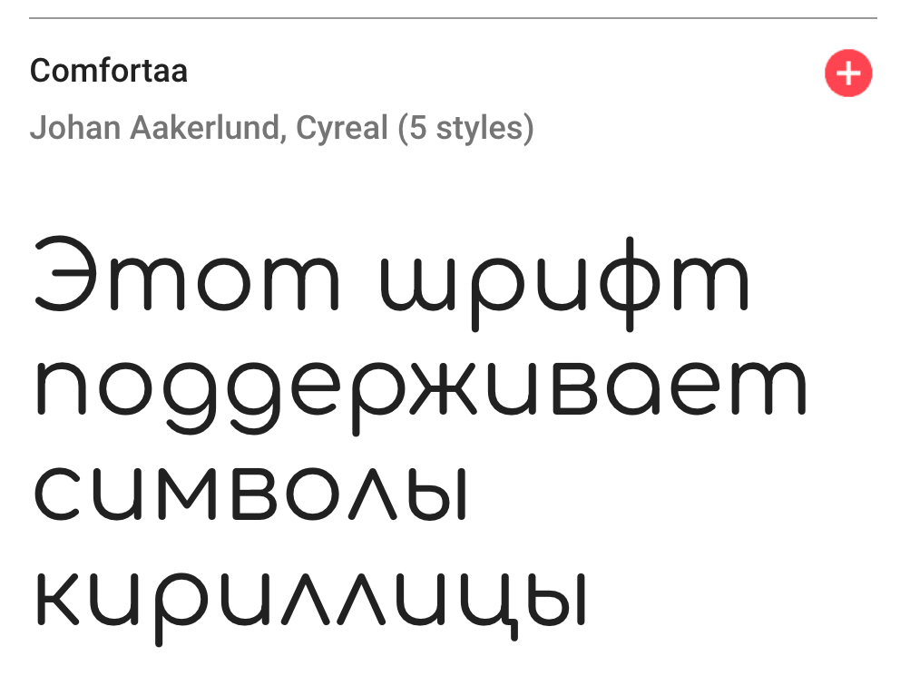
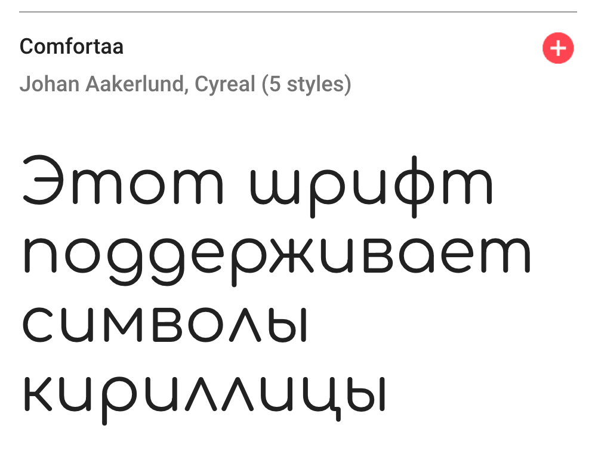

Typesetting for a global web
Typesetting for a global web

🥑 Developer Advocate 🥑

What is typography?
Typography is the art and technique of arranging type to make written language legible, readable, and appealing when displayed.
—Wikipedia
Typography is the visual component of the written word.
—Matthew Butterick
Typography, the design, or selection, of letter forms to be organized into words and sentences to be disposed in blocks of type as printing upon a page.
—Encyclopedia Britannica
✨ Typography is writing with prefabricated letters. ✨
—Gerrit Noordzij
http://www.worldswritingsystems.org/
World writing scripts usage
(as of 2017)
Latin script distribution
| A, a | Ą, ą | B, b | C, c | Č, č | D, d |
| E, e | Ę, ę | Ė, ė | F, f | G, g | H, h |
| I, i | Į, į | Y, y | J, j | K, k | L, l |
| M, m | N, n | O, o | P, p | R, r | S, s |
| Š, š | T, t | U, u | Ų, ų | Ū, ū | V, v |
| Z, z | Ž, ž | Lithuanian (32) | |||
| ا | ب | ج | د | ه | و |
| ز | ح | ط | ي | ك | ل |
| م | ن | س | ع | ف | ص |
| ق | ر | ش | ت | ث | خ |
| ذ | ض | ظ | غ | Arabic (28) | |
| א | ב | ג | ד | ה | ו |
| ז | ח | ט | י | ך כ | ל |
| ם מ | ן נ | ס | ע | ף פ | ץ צ |
| ק | ר | ש | ת | Hebrew (22) | |
| A a | B b | C c | D d | E e | F f |
| G g | H h | I i | J j | K k | L l |
| M m | N n | O o | P p | Q q | R r |
| S s | T t | U u | V v | W w | X x |
| Y y | Z z | English (26) | |||
What are glyphs?


And what about fonts?
 

Distribution of content languages on the web
Sources: W3Techs
When you lose your language, you lose your soul.
—Ghil’ad Zuckermann
Writing systems on the web

Typesetting on the web
Authors should language-tag their content accurately for the best typographic behaviour.
—CSS Text Module Level 3
Bitmap fonts
PostScript
Font formats for web use
| WOFF2 (Web Open Font Format 2) |


|
| WOFF (Web Open Font Format) |
|
| OTF (OpenType) |

|
| TTF (TrueType) |

|
| EOT (Embedded Open Type) |
|
| SVG (Scalable Vector Graphics) |

|
Fonts on web pages

Bridging a font reference with font data

Generic font families
Dependent on OS, HTML language, character set and browser.
| serif | Times New Roman, SimSun, SongTi SC |
| sans-serif | Arial, Microsoft Yahei, PingFang SC |
| monospace | Consolas, SimSun, PingFang SC |
| cursive | Comic Sans MS, Apple Chancery, SimSun (oblique), SongTi SC (oblique) |
| fantasy | Gabriola, Impact, Papyrus, Microsoft Yahei, PingFang SC |
Level 4 is adding system-ui, emoji, math and fangsong
Font stacks
/* This text is in Lucida Grande */
.sans {
font-family: Lucida Grande,Lucida Sans Unicode,Lucida Sans,Geneva,Verdana,sans-serif;
}
/* A typical Chinese font stack, declare Latin fonts first */
.zh-hans {
font-family: Tahoma, Helvetica, Arial, "Microsoft Yahei", "微软雅黑", STXihei, "华文细黑", sans-serif;
}Subset fail
 


@font-face rule
@font-face {
font-family: 'Bellato';
src: url('Bellota-Regular.woff2') format('woff2'),
url('Bellota-Regular.woff') format('woff');
}


Anatomy of an @font-face rule
@font-face {
font-family: <family-name>;
src: [ <url> [format(<string> #)]? | <font-face-name> ] #;
font-style: normal | italic | oblique ;
font-weight: normal | bold | 100 | 200 | 300 | 400 | 500 | 600 | 700 | 800 | 900;
font-stretch: normal | ultra-condensed | extra-condensed | condensed | semi-condensed | semi-expanded | expanded | extra-expanded | ultra-expanded;
unicode-range: <urange> #;
font-variant: normal | none | [ <common-lig-values> || <discretionary-lig-values> || <historical-lig-values> || <contextual-alt-values> || stylistic(<feature-value-name>) || historical-forms || styleset(<feature-value-name> #) || character-variant(<feature-value-name> #) || swash(<feature-value-name>) || ornaments(<feature-value-name>) || annotation(<feature-value-name>) || [ small-caps | all-small-caps | petite-caps | all-petite-caps | unicase | titling-caps ] || <numeric-figure-values> || <numeric-spacing-values> || <numeric-fraction-values> || ordinal || slashed-zero || <east-asian-variant-values> || <east-asian-width-values> || ruby ];
font-feature-settings: normal | <feature-tag-value> #;
}
 

@font-face {
font-family: 'Raleway';
src: url('fonts/raleway-regular.woff2') format('woff2'),
url('fonts/raleway-regular.woff') format('woff');
/* no range specified, defaults to entire range */
}
@font-face {
font-family: 'Raleway';
src: url('fonts/comfortaa_regular.woff2') format('woff2'),
url('fonts/comfortaa_regular.woff') format('woff');
unicode-range: U+0400–U+04FF; /* Unicode range for Cyrillic characters */
}CSS font properties
font-size |
Indicates the desired height of the glyphs. Takes absolute or relative values. |
font-weight |
Specifies the weight of the glyphs in the font. Can use keywords or numerical values. |
font-style |
Allows italic or oblique faces to be selected. |
font-stretch |
Selects a normal, condensed or expanded face from a font family. Range spans over 9 keywords. |
font-size-adjust |
Adjusts the font-size to preserve the x-height of the first choice font. |
font-synthesis |
Controls whether user agents are allowed to synthesize bold or oblique font faces when missing. |
font-synthesis
Variable fonts
Dragons
Source Hans Serif (65,535 glyphs)
Progressive Font Enrichment
to enable the ability for only the required part of the font be downloaded on any given page, and for subsequent requests for that font to dynamically ‘patch’ the original download with additional sets of glyphs as required on successive page views—even if they occur on separate sites
—Jason Pamental on Web Fonts & Typography News #11
Incremental Transfer Demo
http://eepurl.com/ghd9b9/
OpenType features
- aalt
- abvf
- abvm
- abvs
- afrc
- akhn
- blwf
- blwm
- blws
- calt
- case
- ccmp
- cfar
- cjct
- clig
- cpct
- cpsp
- cswh
- curs
- cv01 – cv99
- c2pc
- c2sc
- dist
- dlig
- dnom
- dtls
- expt
- falt
- fin2
- fin3
- fina
- flac
- frac
- fwid
- half
- haln
- halt
- hist
- hkna
- hlig
- hngl
- hojo
- hwid
- init
- isol
- ital
- jalt
- jp78
- jp83
- jp90
- jp04
- kern
- lfbd
- liga
- ljmo
- lnum
- locl
- ltra
- ltrm
- mark
- med2
- medi
- mgrk
- mkmk
- mset
- nalt
- nlck
- nukt
- numr
- onum
- opbd
- ordn
- ornm
- palt
- pcap
- pkna
- pnum
- pref
- pres
- pstf
- psts
- pwid
- qwid
- rand
- rclt
- rkrf
- rlig
- rphf
- rtbd
- rtla
- rtlm
- ruby
- rvrn
- salt
- sinf
- size
- smcp
- smpl
- ss01
- ss02
- ss03
- ss04
- ss05
- ss06
- ss07
- ss08
- ss09
- ss10
- ss11
- ss12
- ss13
- ss14
- ss15
- ss16
- ss17
- ss18
- ss19
- ss20
- ssty
- stch
- subs
- sups
- swsh
- titl
- tjmo
- tnam
- tnum
- trad
- twid
- unic
- valt
- vatu
- vert
- vhal
- vjmo
- vkna
- vkrn
- vpal
- vrt2
- vrtr
- zero
Font feature properties
font-kerning

|
font-variant-position

|
font-variant-position-ligatures

|
font-variant-numeric

|
font-variant-caps

|
font-variant-alternates

|
font-variant-east-asian
Allows control of glyph substitution and sizing in East Asian text
一个简体字可能对应多个繁体字，如简体字「发」，其相应的繁体字可能为「發」或「髮」；一个繁体汉字对应多个简体汉字的情况与前者相比数量极少但仍需注意，如繁体字「乾」可能对应简体字「干」或「乾」。繁简汉字的对应关系具体应由上下文决定。
唖 芦 溢 茨 鰯 嘘 欝 厩 噂
font-language-override
To control the use of language-specific glyph substitutions and positioning
<!-- Macedonian lang code -->
<body lang="mk">
<h4>Члeн 9</h4>
<p>Никoj чoвeк нeмa дa бидe пoдлoжeн нa прoизвoлнo aпсeњe, притвoр или прoгoнувaњe.</p>
</body>body {
/* Serbian OpenType language tag */
font-language-override: "SRB";
}Example lifted from CSS Fonts Module Level 4
http://book.webtypography.net/
Golden rules for web typography
by Richard Rutter
- Don't trust computers
- Use the default font size for paragraph text
- Adjust type size according to reading distance
- Adjust the font size if the typeface requires it
- Set tables to be read
- Set text at display sizes, even on small screens
- Resize display text as you would an image
- Reduce your payload
- Optimise page render timing
- Learn to use variable fonts
The text-transform property
If I want [flowers], I’m going to send them to myself.
Süße Soßen-Klöße genießen maßgeblich gefräßige preußische Nutznießer.
Ουδέν κακόν αμιγές καλού.
ァィゥェ ォヵㇰヶ
Line breaks in inline boxes
If an element generates zero boxes, was it really there at all?
If an element generates zero boxes, was it really there at all?
CSS for controlling line breaks
line-break |
allows choosing various levels of “strictness” for line breaking restrictions |
word-break |
controls what types of letters are glommed together to form unbreakable “words”, causing CJK characters to behave like non-CJK text or vice versa |
hyphens |
controls whether automatic hyphenation is allowed to break words in scripts that hyphenate |
overflow-wrap |
allows the UA to take a break anywhere in otherwise-unbreakable strings that would otherwise overflow |
Line breaking by Florian Rivoal @ dotCSS
Hyphenation
If you don't give a lang attribute, you don't get automatic hyphenation.
—Florian Rivoal
Browsers use language-specific dictionaries to figure out where the hyphenation points should be.
text-align & text-justify
- Sets the
text-align-allandtext-align-lastproperties - Describes how the inline-level content of a block is aligned along the inline axis if the content does not completely fill the line box.
text-align: start | end | left | right | center | justify | match-parent | justify-allValues other than justify-all or match-parent are assigned to text-align-all and reset text-align-last to auto.
Selects the justification method used when a line’s alignment is set to justify
text-justify: auto | none | inter-word | inter-characterText alignment and justification
定义了CSS如何支持各种不同国际化语言的书写模式，例如拉丁（Latin）语系及印度（Indic）语系采用从左到右的书写模式，希尔伯特语（Hebrew）或阿拉伯语（Arabic）采用从右到左的书写模式，一些混合了拉丁语和阿拉伯语的文字可能采用双向书写（bidirectional），而一些东亚文字则需要竖排（从上到下）的书写模式。
Vertical text on the web
CSS Writing Modes Level 3 defines CSS features to support for various international writing modes, such as left-to-right (e.g. Latin or Indic), right-to-left (e.g. Hebrew or Arabic), bidirectional (e.g. mixed Latin and Arabic) and vertical (e.g. Asian scripts).
writing-mode property
| horizontal-tb | 从1987到现在 |
| vertical-rl | 从1987到现在 |
| vertical-lr | 从1987到现在 |
| sideways-rl* | 从1987到现在 |
| sideways-lr* | 从1987到现在 |
text-orientation property
text-combine-upright property
Not just for East Asian text
MAGIJA
“…lietuvių tauta privalo būti išsaugota, nes joje slypi raktas visoms mįslėms – ne tik filologijos, bet ir istorijos — įminti”
Kaip ąžuol's drūt's prie Nemunėlio
Lietuvis nieko neatbos!
Kaip eglė ten prie Šešupėlės
Ir vėtroj, ir žiemą žaliuos!
Lietuviais esame mes gimę,
Lietuviais norime ir būt!
Tą garbę gavome užgimę,
Jai ir neturim leist pražūt!
Ką darai, daryk gerai!
Ačiū!


Header font is Movement by María Ramos and Noel Pretorius.
Body font is PT Sans by Alexandra Korolkova